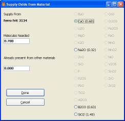
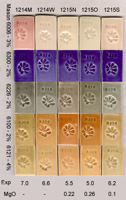
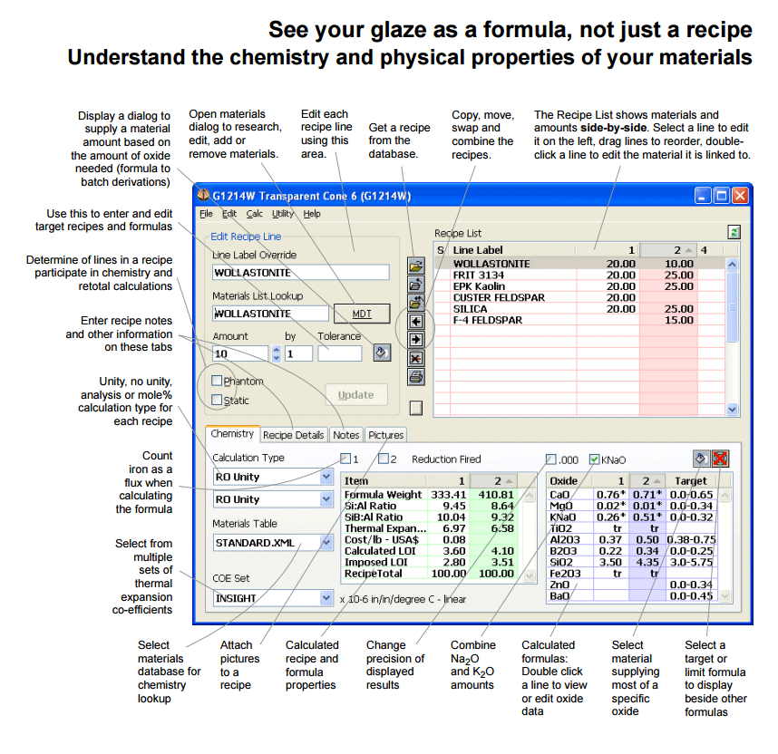

A Low Cost Tester of Glaze Melt Fluidity
A One-speed Lab or Studio Slurry Mixer
A Textbook Cone 6 Matte Glaze With Problems
Adjusting Glaze Expansion by Calculation to Solve Shivering
Alberta Slip, 20 Years of Substitution for Albany Slip
An Overview of Ceramic Stains
Are You in Control of Your Production Process?
Are Your Glazes Food Safe or are They Leachable?
Attack on Glass: Corrosion Attack Mechanisms
Ball Milling Glazes, Bodies, Engobes
Binders for Ceramic Bodies
Bringing Out the Big Guns in Craze Control: MgO (G1215U)
Can We Help You Fix a Specific Problem?
Ceramic Glazes Today
Ceramic Material Nomenclature
Ceramic Tile Clay Body Formulation
Changing Our View of Glazes
Chemistry vs. Matrix Blending to Create Glazes from Native Materials
Concentrate on One Good Glaze
Copper Red Glazes
Crazing and Bacteria: Is There a Hazard?
Crazing in Stoneware Glazes: Treating the Causes, Not the Symptoms
Creating a Non-Glaze Ceramic Slip or Engobe
Creating Your Own Budget Glaze
Crystal Glazes: Understanding the Process and Materials
Deflocculants: A Detailed Overview
Demonstrating Glaze Fit Issues to Students
Diagnosing a Casting Problem at a Sanitaryware Plant
Drying Ceramics Without Cracks
Duplicating Albany Slip
Duplicating AP Green Fireclay
Electric Hobby Kilns: What You Need to Know
Fighting the Glaze Dragon
Firing Clay Test Bars
Firing: What Happens to Ceramic Ware in a Firing Kiln
First You See It Then You Don't: Raku Glaze Stability
Fixing a glaze that does not stay in suspension
Formulating a body using clays native to your area
Formulating a Clear Glaze Compatible with Chrome-Tin Stains
Formulating a Porcelain
Formulating Ash and Native-Material Glazes
G1214M Cone 5-7 20x5 glossy transparent glaze
G1214W Cone 6 transparent glaze
G1214Z Cone 6 matte glaze
G1916M Cone 06-04 transparent glaze
Getting the Glaze Color You Want: Working With Stains
Glaze and Body Pigments and Stains in the Ceramic Tile Industry
Glaze Chemistry Basics - Formula, Analysis, Mole%, Unity
Glaze chemistry using a frit of approximate analysis
Glaze Recipes: Formulate and Make Your Own Instead
Glaze Types, Formulation and Application in the Tile Industry
Having Your Glaze Tested for Toxic Metal Release
High Gloss Glazes
Hire Us for a 3D Printing Project
How a Material Chemical Analysis is Done
How desktop INSIGHT Deals With Unity, LOI and Formula Weight
How to Find and Test Your Own Native Clays
I have always done it this way!
Inkjet Decoration of Ceramic Tiles
Is Your Fired Ware Safe?
Leaching Cone 6 Glaze Case Study
Limit Formulas and Target Formulas
Low Budget Testing of Ceramic Glazes
Make Your Own Ball Mill Stand
Making Glaze Testing Cones
Monoporosa or Single Fired Wall Tiles
Organic Matter in Clays: Detailed Overview
Outdoor Weather Resistant Ceramics
Painting Glazes Rather Than Dipping or Spraying
Particle Size Distribution of Ceramic Powders
Porcelain Tile, Vitrified Tile
Rationalizing Conflicting Opinions About Plasticity
Ravenscrag Slip is Born
Recylcing Scrap Clay
Reducing the Firing Temperature of a Glaze From Cone 10 to 6
Setting up a Clay Testing Program in Your Company or Studio
Simple Physical Testing of Clays
Single Fire Glazing
Soluble Salts in Minerals: Detailed Overview
Some Keys to Dealing With Firing Cracks
Stoneware Casting Body Recipes
Substituting Cornwall Stone
Super-Refined Terra Sigillata
The Chemistry, Physics and Manufacturing of Glaze Frits
The Effect of Glaze Fit on Fired Ware Strength
The Four Levels on Which to View Ceramic Glazes
The Majolica Earthenware Process
The Potter's Prayer
The Right Chemistry for a Cone 6 Magnesia Matte
The Trials of Being the Only Technical Person in the Club
The Whining Stops Here: A Realistic Look at Clay Bodies
Those Unlabelled Bags and Buckets
Tiles and Mosaics for Potters
Toxicity of Firebricks Used in Ovens
Trafficking in Glaze Recipes
Understanding Ceramic Materials
Understanding Ceramic Oxides
Understanding Glaze Slurry Properties
Understanding the Deflocculation Process in Slip Casting
Understanding the Terra Cotta Slip Casting Recipes In North America
Understanding Thermal Expansion in Ceramic Glazes
Unwanted Crystallization in a Cone 6 Glaze
Using Dextrin, Glycerine and CMC Gum together
Volcanic Ash
What Determines a Glaze's Firing Temperature?
What is a Mole, Checking Out the Mole
What is the Glaze Dragon?
Where do I start in understanding glazes?
Why Textbook Glazes Are So Difficult
Working with children
G1214W Cone 6 transparent glaze
Description
The process we used to improve the 20x5 base cone 6 glaze recipe to produce G1214W.
Article
A Cone 6 Glossy Base Glaze is Born
The Glaze Dragon
It can feel like you are fighting a dragon when it comes to learning DIY in ceramics and pottery. He is not out for your best interests, he wants you to feel overwhelmed by even the simplest of technical knowledge.
I love to use the Glaze Dragon as a symbol of the attitudes that prevent us from getting control of our glazes and our addiction to the 'roulette wheel' approach to finding glazes. The dragon wants us to think glaze science is a 'mystery', that existing recipes were dropped from heaven and questioning or adjusting them is blasphemy. The advent of the internet has actually made us worse, we're furiously trafficking in more recipes that don't travel well.
Decades of glossy magazines have taught us that 'appearance is everything'. Schools still crank out generations of ceramists with numbed consciences regarding their functional accountability to customers. At conferences we've argued about craft and art and addressed the politics of ceramics. But the closest we ever seem to come to understanding glazes is learning application methods. It is true, many authors and teachers have been singing the 'learn-your-materials' song. But those studying materials feel ill-equipped to create balanced, fitted, strong, color compatible glazes, opening the kiln is still like pulling the handle on a slot machine.
The key to creating good recipes is the marriage of material and oxide knowledge. Oxides? Fired glazes are built out of them. They are a universal language of glazes. The kiln decomposes ceramic materials into their oxide building blocks and reassembles them into the fired glaze. Oxide know-how has been out there all along and computer users have rediscovered it. These people have not been on the roller coaster, they have been making really exciting things happen in the studio and on the factory floor, learning from their mistakes as never before. And the Internet has allowed them to find each other and rejoice in not being as alone as they thought.
But many questions still remain. The most asked question I hear is: "Do you have a good cone 6 glaze?" It is asked so often because so many non-satisfactory answers have been given in the past. What we need to answer it well is a 'attitude transplant' about what a good glaze is and how to get it. I would like to demonstrate how we can view materials as both powders with a physical presence that shapes the properties of the glaze slurry and also as 'oxide warehouses' that supply building blocks to the fired glass.
What is a Good Recipe?
After enough failed 'affairs' with textbook or internet recipes you can lose your ability to recognize true glaze quality. It is much more than simple visual character. A good recipe is:
- Reliable, stable, and predictable. Its chemistry is balanced so that firing it a little slower or faster, lower or higher, applied thicker or thinner makes minimal difference and still is predictable. It offers the true economy of quality materials.
- It works with a variety of stains and has associated documentation about what colors it does not work with, why, and what to do about it.
- It has maximum resistance to leaching so you don't poison your customers.
- It applies evenly without drips or cracking even on very dense bisque ware and fires without a tendency to blister or crawl. It does not settle hard in the bucket and it does not gel or powder off excessively.
- It fires to a hard and durable surface.
- It does not pinhole, crawl, or blister.
- Poor glaze fit dramatically weakens ceramic ware. Thus it would have a relatively low thermal expansion so it not only does not craze on the intended body(s) but fits well so it strengthens ware.
- It offers good transparency not only for its own use but as a clean starting point for other glazes.
- It employs easy-to-get materials whose chemistry is published by the manufacturer or distributor(s).
- You can easily adjust its melting temperature, expansion, gloss, etc.
Rationalizing a Cone 6 Glaze
How many textbook glazes have you found that could withstand this scrutiny? I've had ones that looked good but satisfied almost none of these requirements! Remember a fundamental point: The key to creating good recipes is the marriage of material and oxide knowledge. It would be very difficult indeed to meet the above requirements using a material-blending approach. It would be impossible to chance upon them by mixing recipes! It is imperative to look at the fired glaze as a formula. What is a formula? A formula compares the numbers of oxide molecules in the fired glaze. Oxides tend to have predictable effects.
You might respond: "That's too much trouble, it is all a matter of faith and trust anyway, just give me the glaze recipe!" But the Potter's Prayer is not enough, ethics and accountability are involved. Other's materials are different than mine, as is their clay, process, firing, taste, and type of ware. Someone's poor implementation or misapplication of my recipe could produce weak, difficult-to-clean, crazed, shivered, leached ware that hurts the reputation of the ceramic community, could injure people physically, and makes me partly accountable for the technical quality of their ware! Ethically I should understand and document a recipe before handing it out to prove that I am conscientious and willing to field questions to help users adapt. Borrowing recipes from others without being willing to adjust or question them is looking more and more like taking someone else's prescription.
A New Glaze is Born
Let's try to create and test glaze recipe that addresses the above requirements. I'll leave the trial and error additions of colorants, opacifiers, specking agents and variegators to you. First, consider this limit chart for cone 6 non-leaded stoneware glazes.
| Cone 6 Limits: Green & Cooper | |
| CaO | 0-0.55 |
| ZnO | 0-0.3 |
| MgO | 0-0.325 |
| KNaO | 0-0.375 |
| B2O3 | 0-.35 |
| Al2O3 | 0.275-0.65 |
| SiO2 | 2.4-4.7 |
| Boron unified with other fluxes | |
This chart is not a boundary waiting to be proven invalid, it is simply a recommendation of the ceramic industry. Formulas within these ranges present the least problems and tend to test well for leaching and hardness.
Now lets talk about the oxides in the above limit chart. As we do so don't think about the powdered materials you use to mix up the glaze batch, imagine being able to look at the fired glaze under a microscope powerful enough to reveal the oxide structure. I will consider them in the order they can most easily be supplied from parent materials.
B2O3

The desktop INSIGHT Supply Oxide dialog
Boron is a low melting glass, it is like silica on steroids, it is a flux and a glass. It is possible to make a cone 6 glaze without boron but it won't flow nearly as well and it will tend craze. Lots of cone 6 glazes have way too much boron, some employing Gerstley Borate to supply as much B2O3 as all the other fluxes combined. Not good, it should be one third of that. Why? Durability, solubility and reversal of the thermal expansion influence. Like steroids, use it when appropriate and in the right amounts only! I get very good melt fluidity when B2O3 comprises about 25% of the fluxes. However chrome-tin colors tend to start failing if the boron is more than one third of the CaO amount, more on this later.
A no-alumina boron frit is perfect to source B2O3 because we can supply lots of alumina from kaolin, giving the glaze good slurry properties. About 25% Frit 3134 will give us the needed boron. How do I know that? A glaze chemistry program will show you the makeup of the frit, let you select which oxide to supply and specify how much. It then calculates the amount of frit needed.
CaO
CaO is a strong flux at cone 10 but not as much so at cone 6. But having some B2O3 around can really encourage CaO to flow better. Likewise the presence of sodium and potassium can turn CaO into a much more active flux (melter). We need CaO as high as possible to make the glaze work with chrome-tin colors, so I would like to approach the maximum recommended in the limit formula. However CaO can really tend to form either calcium-silicate or calcium-borate crystals on cooling if oversupplied. This is a bit of a dilemma.
To get around 0.55 formula units of CaO (of a total of 1.0) we need to top up the CaO already supplied by the frit. This will take 10% of my favorite calcium mineral, Wollastonite. It is much better quality than whiting, contains finely dispersed SiO2, and it does not form gases of decomposition.
Na2O/K2O
As noted above, these oxides are a good choice to round out the fluxes to a total of 1 (unity formulas are adjusted so the fluxes total 1). Na2O and K2O behave in a similar manner and melt well at cone 6 to encourage bright colors. I chose to use a clean and consistent feldspar named Kona F-4, 15% is needed. The feldspar also brings some alumina and silica with it.
An interesting part of supplying this on the computer is that the feldspar also sources CaO so you have to go back and adjust the Wollastonite again to restore CaO to 0.6.
Al2O3
Al2O3 gives the glaze melt body, stiffens it to keep it from running off the ware, even over a range of temperatures. The stiff melt also prevents the growth of crystals that disrupt smooth glaze surfaces and cloud transparents, we want that in a base glaze. Alumina lowers glaze thermal expansion very significantly and is a key to glaze hardness and resistance to leaching. Alumina and boron melt together very well. Like SiO2, you want as much alumina as a glaze will take and still melt well (you need good reason to under supply Al2O3 i.e. non-functional crystalline glazes). High Al2O3 usually means a matte glaze, but not if there is significant B2O3 and SiO2 glass formers around.
Boron glazes can take a lot of Al2O3, the above chart claims 0.65 parts (compared to around 0.4 for non-boron glazes). Tests I have done show that with the above amount of boron a glaze in this system will comfortably take 0.35 alumina, melt very well and prevent crystal growth. By 'melts well' I mean it has fired hardness, minimal bubble population, smooth hard surface, and good melt flow.
Kaolin supplies Al2O3 and it produces a glaze slurry that gels, applies evenly to ware, and dries hard. This is a match made in heaven, the more kaolin a we can employ the better. What kind of kaolin? I prefer EP Kaolin because it is clean, plastic, and flocculates and gels the glaze so it applies without drips, even on dense bisque ware.
SiO2
Like alumina, silica has many beneficial effects on the fired glass. It reduces thermal expansion and increases glaze hardness; the more a glaze can tolerate the better, the limit formula above recommends up to 4.7. It is true that too much will compromise matteness or raise the melting temperature, but it is surprising how many glazes will take plenty of silica without any trouble. For example, I ran many tests with around 2.5 parts SiO2 thinking that it would not melt well with more. Then I added a full 10% silica (the equivalent for going from 2.5 formula to 3.0) and it worked perfectly, completely solving a crazing problem on a low silica porcelain I use. It is possible this recipe will tolerate even more.
The Calculations
Classic glaze chemistry that have been around since early this century but we just never bothered. Now glaze chemistry software makes it easy to do them and we are figuring out new ways to apply them.
After supplying each of the above oxides from the indicated materials I juggled material amounts to achieve 5% roundoffs. This held all the oxide amounts fairly close to target (except that CaO is a little over the target).
Here is the recipe:
| G1214W CLEAR LOW EXPANSION | |||
| SILICA | 25.00 | Al2O3 | 0.48 |
| EP KAOLIN | 25.00 | Na2O | 0.23* |
| WOLLASTONITE | 10.00 | CaO | 0.73* |
| FRIT 3134 | 25.00 | K2O | 0.03* |
| F-4 FELDSPAR | 15.00 | B2O3 | 0.33* |
| SiO2 | 4.22 | ||
Below there is link to this recipe in the recipe area of this site.
Now please remember, I am not promoting this recipe as the end-all of cone 6 functional base glazes. This one is part of a larger project centered on the G1214M recipe. I am promoting a way of thinking. Take this recipe, understand it, adjust it, make it work for you. For example:
- Add more SiO2 or Al2O3 if it melts well for you, reduce if it does not.
- Reduce the B2O3 for CaO if you need to use chrome-tin colors.
- Reduce the SiO2 and increase the CaO to get a matte.
- Add opacifiers, colorants, variegators, specking agents to create an infinite number of effects.
By the way, I found that this recipe worked well with equal parts by weight of water and powder to give a specific gravity of 1.45.
Testing Your Glaze
Mention the idea of testing a glaze and 99% of us think in terms of dipping a test tile and firing it to see how it looks. But testing should consider far more. You should test slurry properties, application properties, devitrification, clarity, crawling, stain compatibility, leaching, hardness, cutlery marking, crazing/shivering, reaction with solubles, melt flow, firing volatility, and for general functional use.
Oxide Knowledge, Electronic Textbooks and the Net
It is true, oxides and formulas can seem intimidating at first. But consider: I can list the oxides on the fingers of my hands and they have predictable behavior. Compare this with thousands of materials whose effects in recipes are much more difficult to predict (there is no such things a 'material limit recipes'). Perhaps you wonder where a person might learn about this 'predictable behavior' of oxides. It does tend to be pretty sparse in textbooks. The oxides area of this site is an excellent place to start.
Crazing
It is possible that you need to move still further to stop crazing on your clay body, especially if it is very low in silica. We suggest increasing B2O3 slightly and then increasing Al2O3. Or you may simply be able to add silica. In serious cases of crazing the magic oxide is MgO, increasing at at the expense of K2O and Na2O will dramatically reduce the expansion. MgO does not melt as well at middle temperature but we have found the diversifying the fluxes and increasing the boron a little will make room for as much MgO as you need. Here is our G1215M recipe. Although the materials in the recipe are quite different, the chemistry is very similar. The small amount of zinc should not be a problem for most, but if it is you can leave it out and see if it still melts enough, if not add a little more frit. You can try increasing the kaolin further to drop expansion. Note that this recipe does not total 100.
| Silica | 35.0 |
| Strontium Carbonate | 2.0 |
| Zinc Oxide | 2.0 |
| Spodumene | 10.0 |
| Dolomite | 11.0 |
| Frit 3195 | 30.0 |
| EPK | 20.0 |
As of Dec 2002 we have released a new low expansion base glaze numbered G1215U. It turns out that substituting MgO for other fluxes is by far the most effective way to reduce glaze thermal expansion. Fusion frit F69 or Ferro 3249 are the magic behind this type of approach (Frit 3249 contains a little CaO in addition to the MgO). These high magnesia frits melt much better than any natural MgO source and they do not produce gases during decomposition. Here is the recipes we are working with now:
| G1215U | |
| PIONEER KAOLIN | 14.0 |
| SILICA | 26.0 |
| WOLLASTONITE | 14.5 |
| F-4 FELDSPAR | 24.0 |
| Frit 3249 | 20.0 |
| Zinc Oxide | 2.0 |
or using Frit F69:
| G1215O | |
| EPK | 14.0 |
| SILICA | 25.0 |
| WOLLASTONITE | 16.0 |
| F-4 SPAR | 25.0 |
| FRIT F69 | 20.0 |
| Zinc Oxide | 2.0 |
Because of high MgO this glaze is hostile to the development of color in Chrome Tin pink stains. It thus makes sense to add 1-2 percent zinc to make it work better with oranges and browns. We have tried it with about 20 other Mason stain and it works well with all of them (including manganese alumina pink, lavender and yellows).
Color Problems
This formula does not work well with chrome tin pink colors. To make it work you must reduce the boron and increase the calcia until it does. For the brightest pinks you may have to tolerate an increase in thermal expansion and another clay body higher in silica may have to be used to prevent crazing.
Since Frit 3134 and equivalents soften very early it is important that as much of the gases of decomposition from the body are expelled as possible before the frit melts and flows too much. If you get pinholing or blistering, try slowing the firing down during the phase just before the frit begins to melt. In this case it is around 1300-1400F.
Are You Ready for a Matte Version of this Recipe?
Yes, we have a very good matte version that can be tuned to fire with a surface very close to the classic dolomite magnesia mattes of cone 10 reduction (see links).
Conclusion
If you feel this was all too complicated, take heart. All of us are in over our heads, the ceramic process is exceptionally complex and none of us are really in control. So we need tools to better understand it. The oxide viewpoint provides a solid framework within which we can grow and learn together, even criticize each other. Yes this framework gives you the opportunity to explain how I am totally wrong about something in the above analysis. Then this base glaze would get even better. So let's at least start the new journey.
Related Information
Stains that work better in some glazes and not others

This picture has its own page with more detail, click here to see it.
This demonstrates how the host glaze affects the color development of certain stains. Blue is stable in pretty well all glazes. But chrome tin pink (top row) is very particular that the glaze have the right chemistry (1214M is obviously best, it has the highest CaO and lowest B2O3). The 6100 brown works much better in the N and O base glazes (they have higher Al2O3). Stain companies have guidance on chemistry particulars and you can view the chemistry of your recipe in your account at insight-live.com.
The glaze dragon!
This picture has its own page with more detail, click here to see it.
There are many mindsets that prevent us to getting control of our glazes. Many of them have nothing to do with the glazes themselves, the problem is with us, our culture as ceramists and potters.
The main recipe window in Digitalfire Insight software

This picture has its own page with more detail, click here to see it.
Insight installs on your Linux, Windows or Mac computer. It provides a very interactive way to comparing two recipes and their calculated formulas or analyses. As you make changes in the recipe you can see how it impacts the recipes. It is ideal for demonstrating concepts like unity, analysis,
formula, mole%, LOI, formula-to-batch conversion.
Links
| Articles |
G1214M Cone 5-7 20x5 glossy transparent glaze
This is a base transparent glaze recipe developed for cone 6. It is known as the 20x5 or 20 by 5 recipe. It is a simple 5 material at 20% each mix and it makes a good home base from which to rationalize adjustments. |
| Articles |
G1214Z Cone 6 matte glaze
This glaze was developed using the 1214W glossy as a starting point. This article overviews the types of matte glazes and rationalizes the method used to make this one. |
| Articles |
Bringing Out the Big Guns in Craze Control: MgO (G1215U)
MgO is the secret weapon of craze control. If your application can tolerate it you can create a cone 6 glaze of very low thermal expansion that is very resistant to crazing. |
| Recipes |
G1214M - 20x5 Cone 6 Base Glossy Glaze
Developed by Tony Hansen in the 1980s. Its was popular for the simplicity and how well it worked with chrome-tin stains. |
| Recipes |
G1214W - Cone 6 Transparent Base
A cone 6 base clear glaze recipe developed by deriving a recipe from a formula taken as an average of limit formulas |
| Recipes |
G1214Z1 - Cone 6 Silky CaO matte base glaze
This glaze was born as a demonstration of how to use chemistry to convert a glossy cone 6 glaze into a matte. |
| Recipes |
MGBase3 - General Purpose Glossy Base 1 (Mastering Glazes)
From page 92 in Mastering Glazes book |
| Recipes |
MGBase4 - Glossy Base 2 Cone 6 (Mastering Glazes)
From page 96 in Mastering Glazes book |
| Recipes |
G1215U - Low Expansion Glossy Clear Cone 6
A recipe sourcing high MgO (from Ferro Frit 3249) to produce a low expansion glass resistant to crazing on lower silica porcelains. |
| Recipes |
MGBase5 - Glossy Clear Liner Cone 6 (Mastering Glazes)
From page 97 of Mastering Glazes book |
 PayPal | No tracking, No ads, No paywall, No transient content! Just organized, concise information constantly updated and improved. Was this helpful? Consider supporting me. |
| By Tony Hansen Follow me on        |  |
Got a Question?
Buy me a coffee and we can talk 

https://digitalfire.com, All Rights Reserved
Privacy Policy